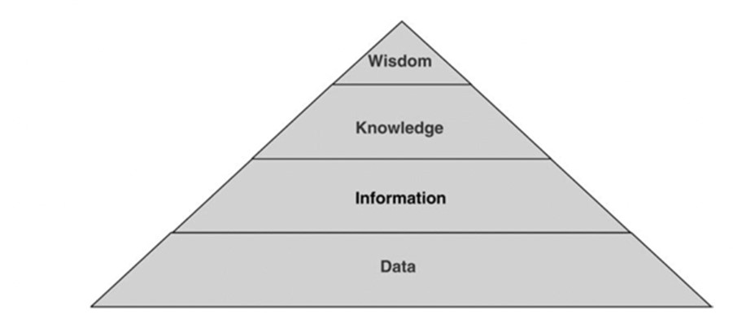

Chapter 2. What is Information?
Learning objectives
So what is information anyway? If we call ourselves information managers, specialists, information professionals, or information scientists. In that case, it seems appropriate to seek a clear understanding of what we are experts in. This chapter aims to explore the concept of information and its related concepts as they have been discussed within the library and information science field. By the end of this chapter, you should be able to:
- Recognize the challenges in defining the concept of information.
- Name and explain some of the concepts related to information.
- Situate these concepts in relationship with each other.
The goal is not for you to come out of this week with a final definition of information but to TRY to define it and to position the concept in relation to other concepts so that you have, at the very least, an understanding of the various (sometimes conflicting) ways of thinking about information, and possibly a start of a conceptual framework that you will keep expanding as you progress in the MI program.
What is information?
Think of the word information, and write down the first ten words (no more) that come to your mind.
Was it difficult?
In what way are your words related to one another beyond their common relationship to the word information?
Now that we have brought the concept of information to our attention let us do what we were all taught (at least in my generation) to do when seeking to understand the meaning of a term and turn to a dictionary to obtain a definition of the term “information”. Here are the definitions offered by the Merriam-Webster Dictionary:
- Knowledge obtained from investigation, study, or instruction
- Intelligence, News
- Facts, data
- The attribute inherent in and communicated by one of two or more alternative sequences or arrangements of something (such as nucleotides in DNA or binary digits in a computer program) that produce specific effects
- A signal or character (as in a communication system or computer) representing data
- Something (such as a message, experimental data, or a picture) that justifies a change in a construct (such as a plan or theory) that represents physical or mental experience or another construct
- A quantitative measure of the content of information. Specifically: a numerical quantity that measures the uncertainty in the outcome of an experiment to be performed
- The communication or reception of knowledge or intelligence
- The act of informing against a person
- A formal accusation of a crime made by a prosecuting officer as distinguished from an indictment presented by a grand jury
Think of the ten words you came up with earlier.
To which of the ten definitions above are your ten words most strongly related?
Which of the ten definitions do you think are relevant to our field? Which do you think are not?
Situating information in its disciplinary contexts
One of the things that you may have noticed with the dictionary definitions is that some of them are unrelated to the information professions as you may now think of them. Indeed, one of the main issues with the word “information” is that it is used in a wide variety of contexts or disciplines, and the meaning of the word often depends on that context or discipline. What, then, would be the specific understanding of information that is most useful for information management? The figure below is a network showing the links between disciplines represented by a large circle and the most frequent keywords containing the word “information” that research publications in these disciplines contain. The orange circle represents our field labelled “LIS” (for Library and Information Science).

What did you think of this map? Were you able to observe apparent disciplinary differences in the uses of the term “information”?
Did the terms linked to the LIS field make sense to you based on your knowledge of the field? Were some of them surprising?
A definition of information for the information field?
Whatever name the schools or programs that train information professionals are called (e.g., Information Management, Information Studies, Information Science), most have in common that one word: “information”. It is thus no surprise that at least a handful of scholars working in these schools or departments have sought to provide some conceptual clarity regarding that word that unites us all. What may be more surprising, however, is that several decades of scholarship and debates have not achieved consensus on the definition of the word information. Still, these conceptual explorations have generated many attempts at such a definition, leading us to explore a range of other correlated concepts that have sometimes been used to determine what is (and what is not) information. They have also generated entertaining debates, such as the well-known discussion between Birger Hjørland and Marcia Bates on whether understanding information as an objective phenomenon is helpful for the field. In the next section, we provide an overview of how three scholars of the information disciplines have proposed that we should think about the term information: Marcia Bates, Birger Hjørland, and Michael Buckland.
Bates: Fundamental forms of information
Marcia Bates believed that all information is natural and exists in the material world of matter and energy and that “almost anything existing in the universe that can come into human and other animals’ purview can be experienced as information” (Bates, 2006, p. 1033). From there, she constructed a glossary of the different forms of information:
Embedded information: Information left behind on earth by animals. Includes such things as human-created tools or paths through the woods.
Embodied information: The corporeal expression or manifestation of information previously in encoded form.
Encoded information: Natural information organized symbolically, linguistically, or signal-based.
Enacted information: The pattern of organization of actions of an animal in, and interacting with, its environment, utilizing capabilities and experience from its neural stores.
Experienced information: The pattern of organization of subjective experience, the feeling of being in life, of an animal.
Exosomatic information: Information that is stored outside of the body.
Expressed information: The pattern of organization of communicatory scents, calls, gestures, and ultimately, the human spoken language used to communicate among species members and between species.
Genetic information: Information contained in the genotype
Genotype: The genetic constitution of a living thing.
Information 1: The pattern of organization of matter and energy
Information 2: Some pattern of organization of matter and energy to which a living being has given meaning.
Knowledge: Information that has been integrated with other contents of understanding and, therefore, given meaning.
Neural-cultural information: Information created by, processed in, or disseminated from animal nervous systems, especially human nervous systems. (Neural information may also be used for lower animals and/or specifically for the nervous system structures that make memory and action possible in general in animals and humans.)
Phenotype: The genetically and environmentally determined embodiment of a genotype.
Recorded information: Information that has been stored in a durable medium.
Represented information: Natural information that is encoded or embodied.
Trace information: The information that remains after a species is done with it. For example, a no-longer-used wasps’ nest.
If you want to read more about the fundamental forms of information and their relevance for the information field, according to Marcia Bates, you can read the full article:
Bates, Marcia J. 2006. “Fundamental Forms of Information.” Journal of the American Society for Information Science and Technology 57 (8): 10331045. https://doi.org/10.1002/asi.20369.
Hjørland: Information as a subjective/situation construct?
According to Hjørland (2007), there are two basic views of information:
Objective information: any difference (in patterns of matter and energy, as in Bates’ concept of information 1).
Subjective/situational information: a difference that makes a difference.
In his paper, @hjorland_information_2007 criticizes Bates’ fundamental form of information and argues that only subjective information is relevant to the field. While Bates’ concept of information 2 is compatible with that view, the concept of information 1 is not and should be ignored. Hjørland also argues that Bates’ definition of information 2 is too limited because it specifies the need for a living being to interpret the signal and give it meaning, which excludes the idea of computers processing information.
- Do you agree with Hjørland and think computers can give meaning to the signal they process?
For Hjørland, If no one is aware of an object, then it cannot be information; it can become information once someone (or a computer) becomes aware of it. Under the situational definition of information, whether or not something is information depends on the circumstances surrounding the document, data, object or event. These things may be defined as information in certain situations but not others. This idea becomes complicated when you think of how vast the range of information can be; determining if and how something can be informative is very difficult. A tree can be informative in multiple ways. It will represent other trees of its kind, but the rings inside the trunk also provide information about weather patterns. Anything can then be information given the proper context. Hence, for Hjørland, there is no point in ever considering information as an objective phenomenon without any context since information is determined and defined by that context.
If you want to read more about Hjørland’s view of information and his argument against Bates’ information 1 concept, you can read the full article:
Hjørland, Birger. 2007. “Information: Objective or Subjective/Situational?” Journal of the American Society for Information Science and Technology 58 (10): 1448–56. https://doi.org/10.1002/asi.20620.
This article was followed by a response from Bates, followed by another response from Hjørland if you are curious to see how this little dispute unfolded.
Bates, M. J. (2008). Hjørland’s critique of Bates’ work on defining information. Journal of the American Society for Information Science and Technology, 59(5), 842–844. https://doi.org/10.1002/asi.20796
Hjørland, B. (2009). The controversy over the concept of “information”: A rejoinder to Professor Bates. Journal of the American Society for Information Science and Technology, 60(3), 643–643. https://doi.org/10.1002/asi.20972
Buckland: information as thing, process, and knowledge
Buckland (1991) describes information in three ways; information-as-thing, information-as-process, and information-as-knowledge.
Information can be considered a thing when it describes an object, such as data or documents. They are considered information because they are informative; they impart knowledge or communicate information. Everything around you can be informative, which is problematic for information professionals. Indeed, the information systems we manage deal directly with information-as-thing and since we cannot deal with everything in the world, we need to decide what kinds of information-as-thing we choose to engage with. The term document may be helpful here. According to Briet (1951), a document is “any physical or symbolic sign, preserved or recorded, intended to represent, reconstruct, or demonstrate a physical or conceptual phenomenon”. She is well known for her example of an antelope as a document. She discusses how an antelope living free in Africa would not be considered a document, but once captured and put into a zoo, it becomes an object of study. At that point, it has become a document as it is now physical evidence to be used by researchers. Information as a process occurs when someone is informed of something, changing what they know, and what is known is information-as-knowledge that exists in an intangible form in the mind of the knowing entity and cannot be observed or measured.
- One branch of our field is called knowledge management. If knowledge is information in an intangible form that cannot be observed or measured, how can it be managed?
To read more about Buckland’s concepts of information-as-thing, information-as-process, and information-as-knowledge, you can read the full article if you haven’t already:
Buckland, M. K. (1991). Information as thing. Journal of the American Society for Information Science, 42(5), 351–360. https://doi.org/10.1002/(SICI)1097-4571(199106)42:5%3C351::AID-ASI5%3E3.0.CO;2-3
The data, information, knowledge, and wisdom pyramid
In exploring the concept of information, we came across many other terms, such as document, knowledge, understanding, and data. One way to try to make sense of it is by situating each of these terms in relation to each other. The data, information, knowledge and wisdom (DIKW) hierarchy or pyramid (pictured below) was not developed by scholars in the LIS field. Still, it can be helpful to us as it offers a visual representation of the relationship between some of the terms we encountered so far.

Many authors agree that the first appearance of the hierarchy was in T.S. Elliot’s poem The Rock.
“Where is the wisdom that we have lost in knowledge?
Where is the knowledge that we have lost in information?”
The hierarchy connects wisdom, knowledge, information, and data to identify how entities at the higher levels are created from those at lower levels. According to the pyramid, data generates information, information generates knowledge, and knowledge generates wisdom. However, just as defining information has proven quite challenging, there is no consensus on the definition of each level of the pyramid, no consensus regarding the number of layers the pyramid should have, and no consensus regarding the hierarchical nature of the relationship between the concepts. (Rowley, 2007).
Rowley (2007) reviewed the literature on the pyramid and how each concept was defined. She found that most definitions of data point to it being discrete objects, facts or observations, or recorded descriptions of things, events, activities, or transactions. According to Rowley’s review, researchers describe information as data formatted, processed, used, or given meaning. Knowledge is often defined as information processed in an individual’s mind and may also include the requirement that this process has generated justified and true beliefs about the world (Rowley, 2007).
If, according to the pyramid, information is processed data, and knowledge is processed information, then how would you define wisdom?
Does good data necessarily lead to good information?
In what ways do information professionals deal with each level of the pyramid?
What levels of the pyramids can be achieved by computers?
Conclusion
In conclusion, let us all remember that the purpose of the chapter was not to arrive at a final and universal understanding of information but to initiate a reflection on information and related concepts and how these may be relevant to our field. You may come out of this week with an increased sense of clarity or confusion, but what matters most is that you are aware of the ideas behind the terminological mess and reflect on how these ideas may be relevant to you as a future information professional.
Additional questions
- Do you think that information exists in an objective form?
- Do you think that information exists in a subjective form?
- Will two people receive the same information if they read the same book?
- Do you receive the same information if you read the same book twice?
- Does all information transfer require language?